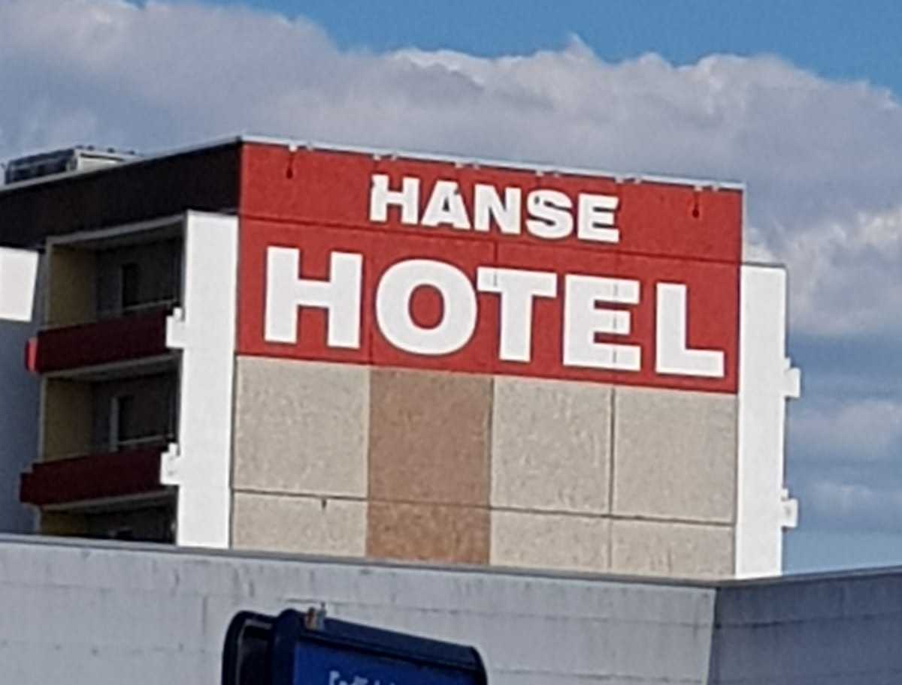

Fassadenbeschriftung – direkt mit Farbe auf Ihrer Gebäudeoberfläche
Unsere Fassadenbeschriftungen werden traditionell mit hochwertiger Dispersionsfarbe direkt auf die Wand aufgetragen – ganz ohne Folien oder aufgesetzte Elemente. Das Ergebnis: eine langlebige, wetterbeständige Beschriftung, die sich perfekt in die Architektur Ihres Gebäudes einfügt und Ihre Botschaft unverwechselbar sichtbar macht.
Unsere Leistungen für Sie:
- Individuelle Wandbeschriftungen: Schriftzüge, Logos und Gestaltungselemente exakt nach Ihren Vorgaben.
- Handwerkliche Umsetzung: Ausgeführt mit hochwertiger Dispersionsfarbe für höchste Beständigkeit.
- Gestaltung nach Corporate Design: Passend zu Ihrer Marke in Farbe, Typografie und Stil.
- Spezielle Lösungen: Für unterschiedliche Fassadenuntergründe und architektonische Anforderungen.
Ihre Vorteile:
- Dauerhafte und wetterbeständige Beschriftung
- Kein Einsatz von Folien oder aufgesetzten Elementen
- Natürliches Erscheinungsbild, das sich harmonisch ins Gebäude integriert
- Individuelle Gestaltung für dauerhafte und witterungsbeständige Wiedererkennung
- Professionelle Ausführung von unserem Team
Mit unserer handwerklich ausgeführten Fassadenbeschriftung setzen Sie auf Qualität und Beständigkeit. Ihr Unternehmen wird direkt auf die Gebäudefassade gebracht – authentisch, sichtbar und einzigartig.
